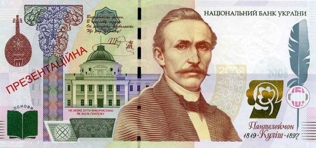

1000 гривень
навіщо це потрібно та чому не наважується НБУ?
Національний банк України випустив срібну колекційну монету, присвячену копанню картоплі.
На реверсі монети зображено згорбленого чоловіка і жінку, а на аверсі - кущ картоплі.
Номінал монети - 10 гривень.
Вага монети складає 31,1 грам, діамерт 38,6 міліметрів. В обіг вона потрапить 22 травня 2018 року.
«Присвячена розкриттю у художньо-образній манері іронічного наїву образів українського архетипу. Загальновідомо, що серед споконвічних цінностей українців - земля-годувальниця. Потяг і любов до неї, робота на ній тисячі років об'єднують Чоловіка і Жінку, які символізують дві фігури у формі серця», - описується монета на сайті.
навіщо це потрібно та чому не наважується НБУ?